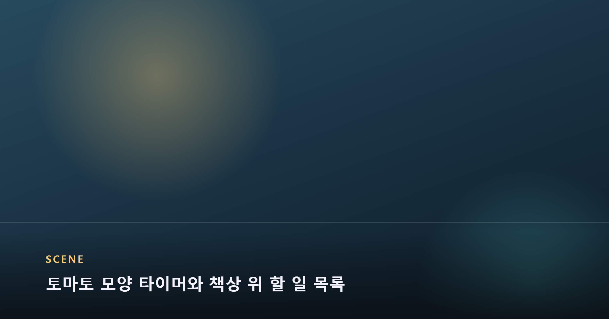
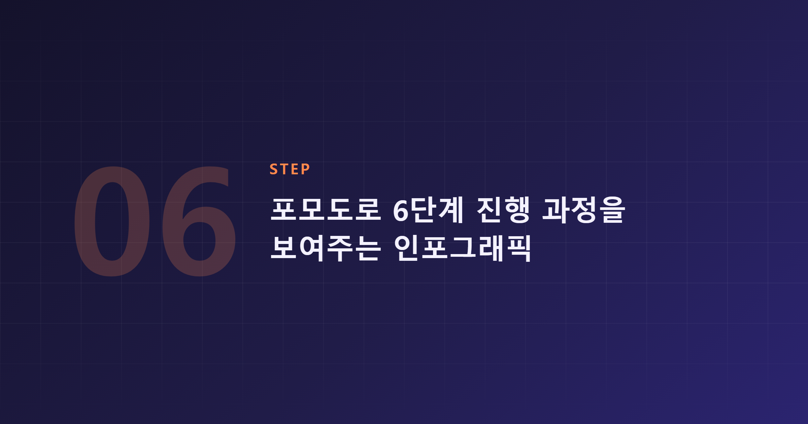
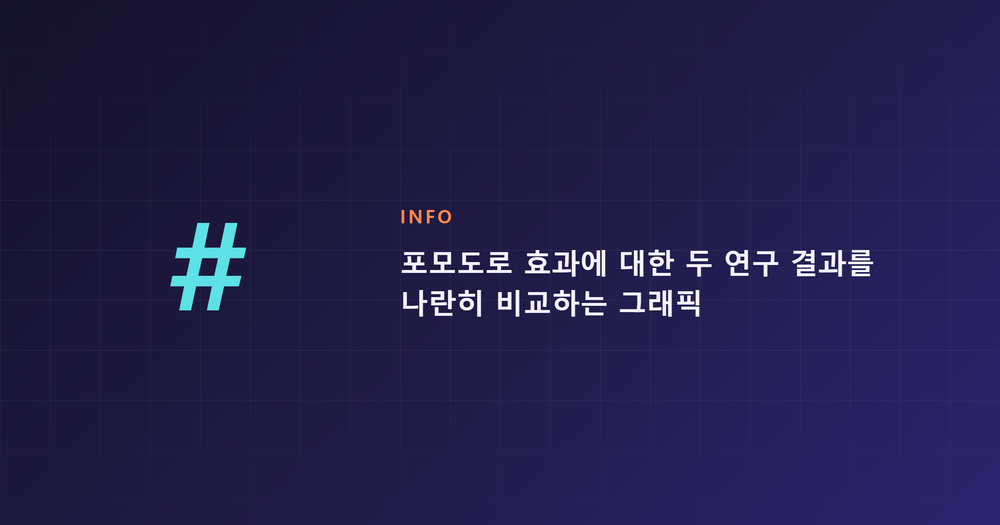

책상에 앉은 지 얼마 되지도 않았는데 벌써 휴대폰을 만지고 계신가요? 문제는 의지력이 부족해서가 아니라, 집중을 지속시켜 줄 '구조'가 없어서일 수 있습니다. 이럴 때 가장 많이 추천되는 시간관리법이 포모도로 기법입니다. 25분 집중과 5분 휴식을 반복하는 이 방법이 왜, 그리고 어떻게 집중력을 끌어올리는지 하나씩 짚어보겠습니다.
포모도로 기법은 소프트웨어 엔지니어 프란체스코 시릴로(Francesco Cirillo)가 1980년대 후반 대학생 시절 만든 시간관리법입니다. 공부에 집중하지 못하는 자신을 보며 토마토(이탈리아어로 pomodoro) 모양의 부엌 타이머로 실험을 시작한 것이 이름의 유래가 됐습니다. 이후 1990년대 소프트웨어 개발팀을 멘토링하는 과정에서 이 방법이 다시 쓰였고, 팀들이 컨퍼런스에서 경험을 공유하면서 업계 전반으로 확산되어 지금은 구글, 마이크로소프트, IBM 같은 기업에서도 활용되고 있다고 알려져 있습니다. 개인의 습관이 조직의 업무 방식으로까지 번진 셈입니다.

실행 방법은 생각보다 단순합니다. ① 할 일 목록과 타이머를 준비하고 ② 타이머를 25분으로 맞춘 뒤 한 가지 작업에만 집중하고 ③ 타이머가 울리면 포모도로 1회를 완료 표시하고 ④ 5분간 휴식하고 ⑤ 이 과정을 4회 반복한 뒤에는 15~30분의 긴 휴식을 갖고 ⑥ 다시 처음으로 돌아가 반복하는 6단계입니다. 여기에는 지켜야 할 규칙도 3가지 있습니다. 4개 이상의 포모도로가 필요할 만큼 큰 작업은 더 작은 단위로 쪼개고, 반대로 1개 포모도로도 안 되는 작은 일들은 묶어서 처리하며, 한 번 시작한 포모도로는 이메일이나 메신저 확인 없이 끝까지 진행해야 한다는 것입니다. 이 규칙을 어기면 그 포모도로는 무효로 보고 처음부터 다시 시작하는 것이 원칙입니다. 결국 핵심은 '25분 동안은 무슨 일이 있어도 한 가지만 한다'는 약속을 스스로에게 지키는 것입니다.

그렇다면 이 방법이 실제로 집중력이나 학업·업무 성과를 높여준다는 근거는 확실할까요? 이 부분은 연구마다 결과가 다소 엇갈립니다. 2025년 발표된 한 실험 연구는 대학생을 대상으로 자기조절 휴식, 포모도로, 플로우타임(Flowtime) 세 가지 방식을 비교했는데, 세 기법 사이에 동기·피로도·생산성·과제 완성도에서 뚜렷한 차이가 없었고 오히려 포모도로 그룹의 피로도가 더 빠르게 올라갔다는 결과를 내놓았습니다. 반면 같은 해 발표된 다른 비교 연구에서는 포모도로 기법이 플로우타임보다 기억력 유지와 학업 성적 면에서 더 우수했다는 결과도 나왔습니다. 즉 '포모도로가 다른 방법보다 무조건 낫다'고 단정하기는 어렵고, 연구에 따라 의견이 갈리는 상황이라고 보는 것이 정확합니다. 다만 두 연구 모두 시간을 구조화해서 관리하는 습관 자체는 의미가 있다는 점에는 동의하고 있어서, 절대적인 우위보다는 자신에게 맞는 리듬을 찾는 과정으로 접근하는 것이 현실적입니다.

처음부터 완벽하게 지키지 않아도 괜찮습니다. 25분이 부담스럽다면 15~18분처럼 짧게 조정해서 시작해도 된다는 조언도 있습니다. 대신 완료한 포모도로 개수는 꼭 기록하는 것이 좋은데, '측정된 것이 관리된다'는 원칙처럼 기록이 쌓일수록 자신의 집중 패턴을 파악하기 쉬워지기 때문입니다. 시릴로 본인은 신선한 오전 시간에 이 방법이 가장 잘 작동한다고 보았고, 짧은 집중 세션에 익숙해지기까지는 점진적인 연습이 필요하다고 말합니다. 특별한 도구가 없어도 타이머와 펜, 메모장만으로 시작할 수 있지만, 뽀모도로 타이머 앱을 원한다면 Pomofocus.io·Marinara Timer 같은 브라우저 기반 도구나 Forest·Toggl Track처럼 기록과 게이미피케이션 기능을 갖춘 앱을 활용하는 것도 방법입니다.
포모도로는 거대한 의지력 대신, 25분이라는 작은 단위의 약속을 반복해서 집중력을 관리하는 도구입니다.
효과의 크기는 사람마다 다르지만, 시간관리 자체를 구조화하는 습관은 분명 남습니다.